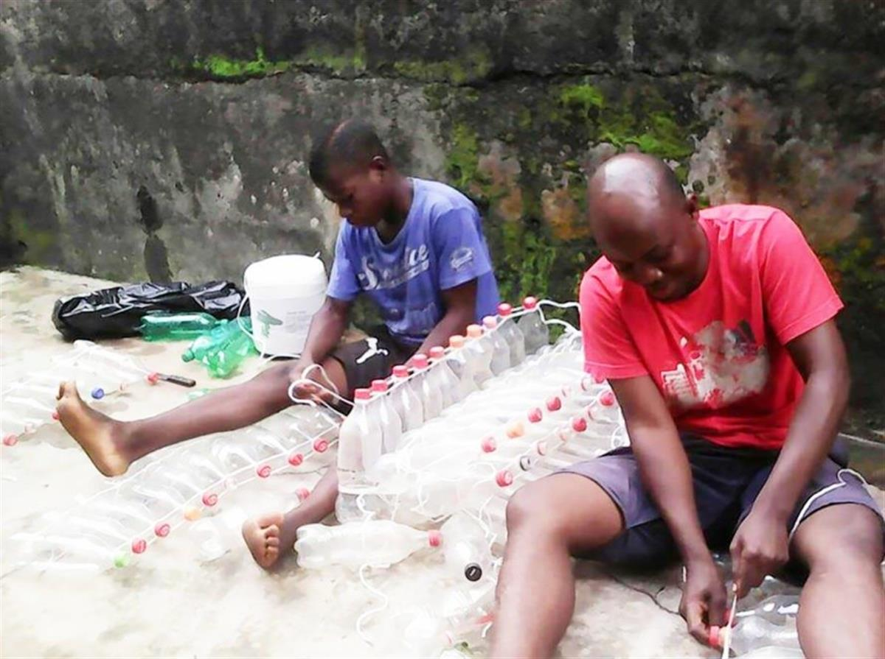
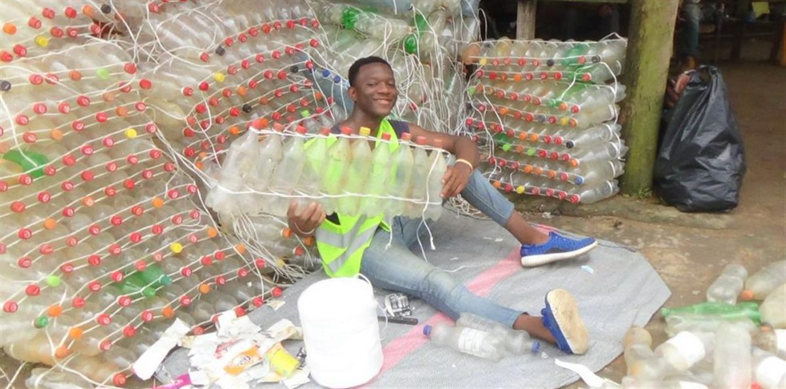
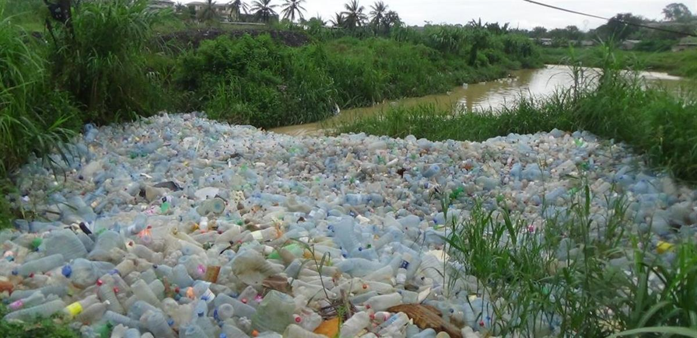

Cameroon (Kribi)
The charismatic Ismaël Essome Ebone is the young entrepreneur behind Madiba & Nature, the Cameroonian nonprofit which uses plastic waste to build ecological canoes.
The idea of designing a boat made from recovered and recycled plastic bottles came to him 2011, when the student had to take shelter from heavy rain and observed plastic bottles flowing past. It only took a few minutes of downpour before his neighbourhood was flooded.
Fishermen laughed when he first ventured out in his ‘ecoboat’, heckling him from the shore. “Where are you going with your toy? It will tear itself in the water!” But he braved the strong waves and currents without a lifejacket. And that shut them up. A wooden boat would have tipped, but not Ismaël’s raft of bottles.
Open on original site ↗Ismaël’s actions are based on the circular economy, with the aim of reusing and recycling all the waste that pollutes the towns and cities in Cameroon, in order to ensure the conservation of nature and its biodiversity.
He started by gathering 1,000 plastic bottles collected in the drains of Douala, the economic capital of Cameroon, and then assembled them into blocks of ten connected by a wire, which makes them move like a caterpillar. To make an entire boat takes around one week. Since April 2016, Madiba & Nature has grown team into a team of five, assisted by volunteers and students.
“A plastic bottle can stay for more than 450 years in nature, so the duration of these boats will depend of the intensity of use and whether we are in a sea area or river.”
There’s a great need for strong and seaworthy fishing boats in the Kibri region, Ismaël’s area, but he isn’t stoping there. The 27-year-old also makes beds, furniture and tourist holiday homes from bottles. However, the dream is to create a system that enables the vulnerable people in Africa to make use of waste products to build homes.
Madiba & Nature also plans to develop other kinds of tourism based on ecological practices that help contribute to the diversification of these people’s sources of income, while fighting pollution and stopping flooding from plastic bottles that clog up the local waterways with devastating effects.
Recycling is a new sector in Cameroon. Although there is regulation for sustainable management and recycling of waste by enterprises, very few of them respect this rule. There is also a lack of knowledge and technology when it comes to recycling plastic: “I come from a coastal region where communities live by fishing, farming and tourism,” he tells us, “and I have seen growing businesses collapse due to plastic waste pollution and people dying of poverty.”
In times of climate change and deforestation, Ismaël recognises the importance of drawing on reserves for our development, such as reusing plastic, rather than constructing with wood. He has also started a programme in schools and for engineers to learn more about green business, and has developed an environmental awareness and education program: “We want to help change people’s attitudes and bad habits on the management of plastic waste that degrades sensitive ecosystems.”
Open on original site ↗AtlasAction: Madiba & Nature wants to offer hope and develop ecotourism for the Londji fishing community village. Contact Ismaël to donate through the Madiba & Nature website.



Madiba & Nature is featured in: An African AtlasChart: 4 magical citizen initiatives.
🎫 AtlasEvent ► Meet Ismaël at Fixing the future 2019 in Barcelona.
Submitted by
Lisa Goldapple, Editor, Atlas of the Future (06 October 2017)